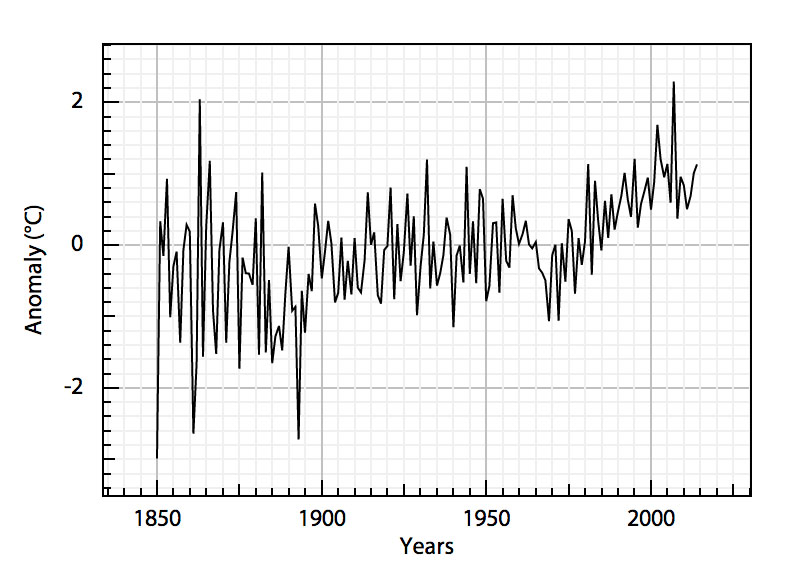
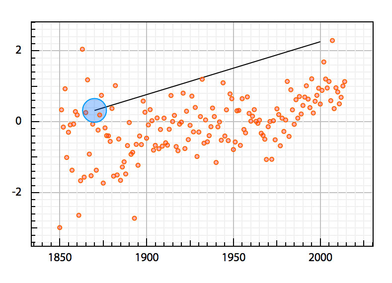
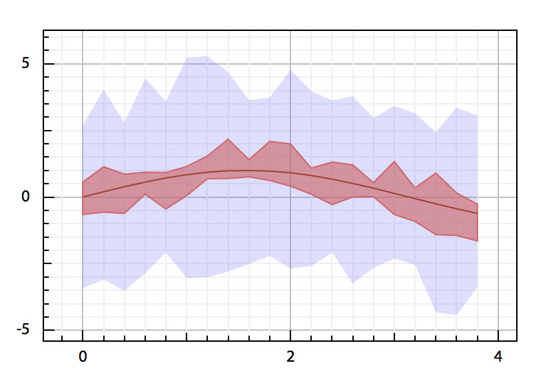
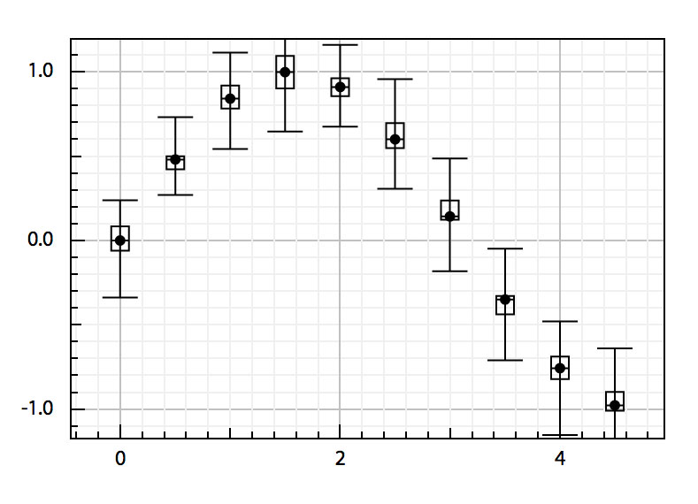
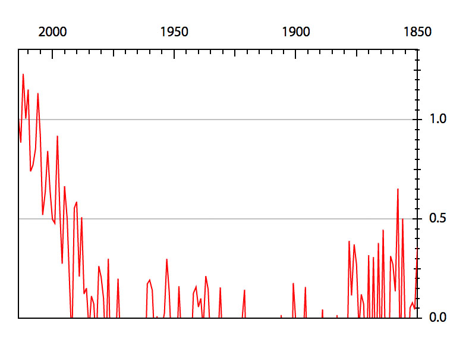
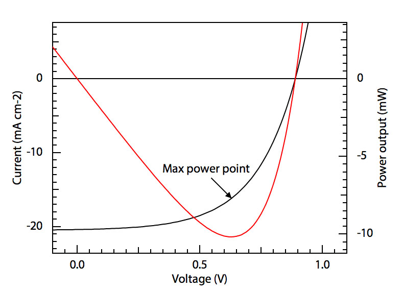
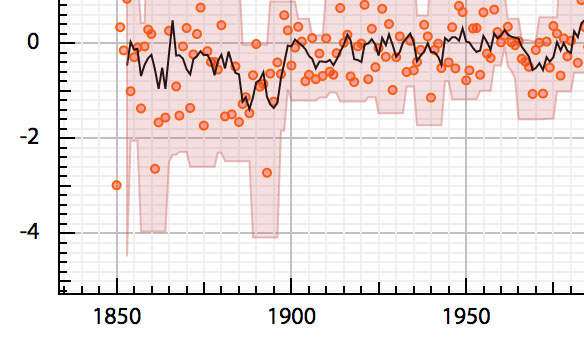
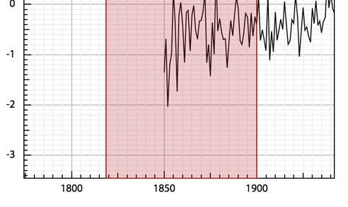
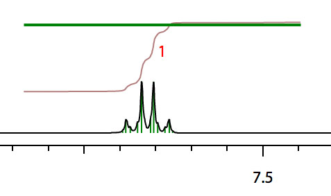

JsGraph
Displays graphs in your browser. Simply. Professionally.







- If you are trying to display some scientific data in your browser, you might just have found the library you have been looking for. With jsGraph you can now display any data easily and efficiently in modern web browsers. Check out our examples !
-

Client-side, HTML5 and SVG technology
jsGraph is fully written in Javascript and requires only jQuery to run on any version of Google Chrome. By using Scalable Vector Graphics, we create graphs that can be exported in the .svg format that can be read by Adobe Illustrator or other vectorial graphics software. -

Going fast
Because shorter rendering time means better user experience, we have taken particular care that your data is displayed in a record time. Because SVG is inherently slower than canvas, we implemented several layers of optimization so that parsing and rendering of heavy data is no longer a burden for your application. No useless data is ever displayed ! -

Your data the way you want
With jsGraphs, you can display data points connected by lines, scattered points (that can show error bars), contour plots or zones. Each serie can be customized. You may chose its color, line thickness, markers shape, ... Use legends to keep track of which serie represents what. Check out the examples for more ! -

Use plugins
Thanks to JavaScript, you can now use your mouse to interact with your graph. Drag your serie around, zoom on it, draw some shapes or move your mouse over some data point to get more specific information ! -

Annotate your data
Because bare data is often meaningless, we developped a powerful API that allows you to draw shapes onto your data. Specify its shape, its style and its position (in px or relative to your axis). You can even use plugins to draw shapes yourself !